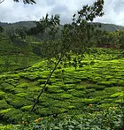
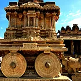

The contemporary resolutions will make on the first day of every new
year and I'm not an exception. In the last year, I pledge myself to
read at least twelve books to reach a certain state of mind. But I
ended up traveling more, and more. I didn't realize till the day I
begin my journey to 4600 KM, a round-trip from Hyderabad to Rajasthan.
If I call up the year 2018 I have traveled to Kanyakumari, Hampi,
Gandikota, Rajasthan, and many places nearby Hyderabad. I am well
aware that the several places I have been and drove are certainly not
a major league but I sure got some state of mind.
For Rajasthan trip, we predetermined to cover Jaipur, Ajmer, Pushkar,
Jodhpur, and Jaisalmer. Managing time for travel and work is so
difficult and an idea of covering whole state requires lot of days.
It's not easy to get ten vacation leaves unless it is a holiday
season. Traveling to the northern part of India during winter is also
not so easy as planned, especially on motorcycle. We beaten all odds
and jacket'd up for ride.
We started off our trip on
Friday at 3:00 PM from Hyderabad to Nagpur and reached our destination
by 10:00 PM. Temperature has been gradually decreasing with time. By
the time we reach Nagpur we all are tied and felt cold to drive any
further. Unlike, Kanyakumari trip during the peak summer we have
pre-booked hotel for night stay.
Dreamer, Software Engineer, sometimes naive, impulsive and trying to substantiate myself in creative writing and personal brand. P.S. I really appriciate if you could post a topic that you want to see in my next publication or you can just leave a comment on my writings.
Trip to God's own country - Kerala
Trip to kanyalumari - Kerala
Trip to hampi - Kerala
